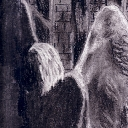

Forums galactiques > Assemblée Galactique : diplomatie officielle > L'Ombre aveuglante
Pages : 1
| Nyza Respect diplomatique : 11  23/08 ETU 19:04 | Score : 9 Détails Un courant d'air froid descendant de l'incommensurable. Rien de plus banal que le vent caressant les joues des mortels menant leur existence systémique. Rien n'est plus doux que la caresse d'un intouchable pour vous faire oublier vos soucis quotidiens. Dans cette caresse semblable à temps d'autres, la nuit aveuglante descendit de son piédestal pour investir Tenora.
La planète blanche sortit de ses nimbes pour tomber éternellement dans une éternelle obscurité. La nuit rendit toute créature mortelle irrémédiablement aveugle, les préparant ainsi à l’ouverture sur le monde extérieur. La nébuleuse qui entourait la planète blanche disparut irrémédiablement, petit à petit, sur un million d’années. L’évolution prit le pas sur la magie nocturne … Les créatures mortelles naquirent, mangèrent, firent leur temps et moururent … Arrivèrent ceux que leur histoire nomma les Immaculés. Ceux des créatures terrestres qui purent les voir les définirent comme des Anges, bras droit du Très Haut. Rien n’en est plus faux. Leur vie n’est que souffrance et éternel tourment, ils payent leur immunité aux caprices du temps d’une souffrance hors du commun à laquelle ils doivent s’habituer car eux-aussi, sont aveugles. La lumière et l’obscurité. La lumière d’une vie éternelle plongée dans la nuit la plus totale. La société des Immaculés s’organisa, grandit mais au jour d’aujourd’hui, n’est pas morte. Tout visiteur se rendant sur la planète blanche ne pourra jamais voir la société fonctionner. Les Immaculés sont des ombres insaisissables qui ne se regroupent que lors d’assemblées extraordinaires. Ils obéissent à Ciara, une entité intelligente que personne n’a pu approcher, voir ou même entendre … A l’exception des Immaculés, éternellement aveugles. Une voix venue de nulle part avait prononcé ces paroles dans l’Assemblée. Une voix masculine venait de faire ce petit rappel historique d’un peuple venu d’ailleurs. C’est pourtant une gracieuse silhouette féminine qui flotta jusqu’au centre de l’hémicycle, les yeux cachés par une abondante chevelure blanche immaculée. La silhouette était sombre, malheureuse, mais dégageant un calme effroyable, presque … inhumain. « Bonjour. » Une voix féminine, douce comme la caresse d’une brise matinale, triste comme la tristesse d’un crépuscule s’enfuyant vers le lointain. La personne flottait mais ses ailes ne battaient pas, blanches comme le lait, mais aux plumes fines comme une lame d’acier. « Je suis la représentante des Immaculés parmi vous. Je ne peux vous rassurer sur la nature des desseins de Ciara car Sa perception m’est infiniment supérieure. Elle seule sait s'ils seront belliqueux ou pacifistes... Notre découverte de cette Galaxie est toute récente mais les Poètes ont propagé jusqu’à nous le souvenir des temps glorieux qui animaient la vie … il y a longtemps… » La voix mourut dans un chuchotement. La jeune fille s’éleva quelque peu et sortit de la salle. Ses délicats pieds nus n’effleuraient même pas le sol, elle volait telle un ange, souffrant comme un martyr. | ||
| Nyza Respect diplomatique : 11 24/08 ETU 13:01 | Score : 2 Détails Tenora, Clairière du Clair-Obscur, 2215 Heure Universelle
Nyza se matérialisa dans un tourbillon de brume au beau milieu de la Clairière du Clair-Obscur. Elle ne voyait rien du lieu où elle se trouvait, ne percevait rien mais sentait la présence de Ciara. Elle flottait en battant majestueusement, lentement des ailes, la tête baissée, attendant. Soudain, elle rejeta sa tête en arrière, des raies de lumière émanaient de ses yeux aveugles, une sorte de transe engourdit tout son corps. Ses muscles s'atrophièrent, son corps fut paralysé... Dans sa transe, Ciara lui apparut. Son esprit fut lié à l'Entité qui l'abreuva de ses pensées et d'une nouvelle partie de l'histoire d'Origine. La douleur s'empara de ses muscles paralysés et elle tenta d'hurler mais ces muscles ne lui appartenaient plus. La transe s'acheva, Nyza cria et retomba à terre. Après un moment d'inconscience, elle hurla à nouveau avant de battre de ses ailes. Elle s'éleva. Elle cessa de crier. Ses yeux aveugles pleurèrent. Frêle, elle repartit de la clairière. Assemblée Galactique. 0456 Heure Universelle Nyza entra à nouveau dans l'hémicycle. Elle ne parla pas, montra juste une planète numérotée d'un système anonyme et fit un signe de mort. Puis elle repartit, ses pieds nus ne touchant toujours pas le sol. |
Pages : 1
Forums galactiques > Assemblée Galactique : diplomatie officielle > L'Ombre aveuglante